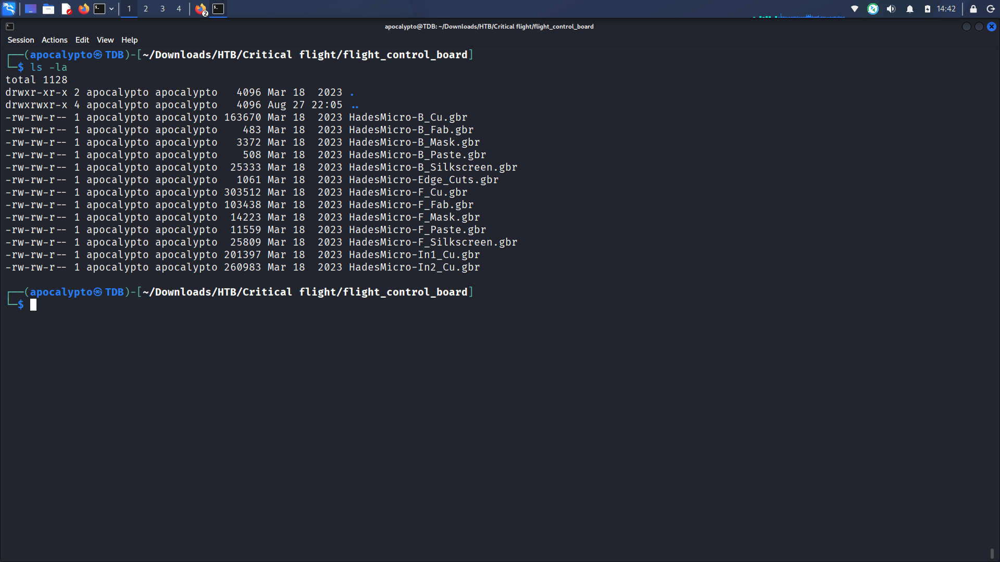

Gerber / PCB Silkscreen Steganography — Layer Analysis
The challenge archive unzips into a set of .gbr files — the Gerber format, the
industry-standard file format PCB manufacturers use to describe each physical layer of a board
(copper traces, solder mask, silkscreen text, drill holes, and outline). Each layer of the
"HadesMicro" flight-controller board ships as a separate file, e.g. HadesMicro-B_Cu.gbr
(bottom copper), HadesMicro-F_Silkscreen.gbr (front/top silkscreen labels), and so on.

.gbr file per PCB layer for the "HadesMicro" flight-controller board.
Gerber files are plain ASCII text, so before reaching for any PCB tooling it's worth just grepping
for the flag format directly. Looping over every file and running strings piped into
grep "HTB" checks each one for a printable HTB{...} string.
$ for file in *; do echo "file name : $file"; strings "$file" | grep "HTB"; done
This returned nothing — no file contains a plain HTB{...} string on its own.
That rules out the simplest case and confirms the flag is encoded into the board geometry itself
(most likely the silkscreen layer, since that's the layer meant to hold human-readable text on a real PCB).
strings + grep HTB with no matches]strings + grep "HTB" across every Gerber file — no plaintext flag present.
Gerber files need to be rendered to actually see what they draw. Without local PCB CAD tools installed,
PCBWay's free Online Gerber Viewer works well for this —
upload all the .gbr files and it reconstructs the board with a per-layer toggle panel
(top/bottom copper, soldermask, silkscreen, solderpaste, inner copper layers, and mechanical drill/outline layers).
Full writeup continues with layer-by-layer analysis and flag recovery.